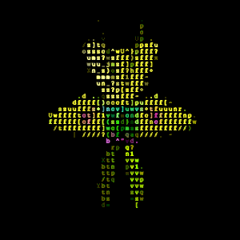
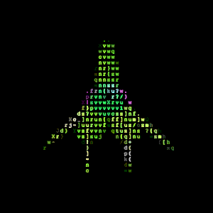

about
project by iain nash
[solid] APIs used:
- google maps / street view
- flickr location apis
- instagram location apis
- foursquare nearby apis
[amazing!] open source libraries used:
proog128/gsvpanodepth
geganoo/gsvpano
inear/brickstreetview

jquery/jquery

kriskowal/q
mrdoob/threejs